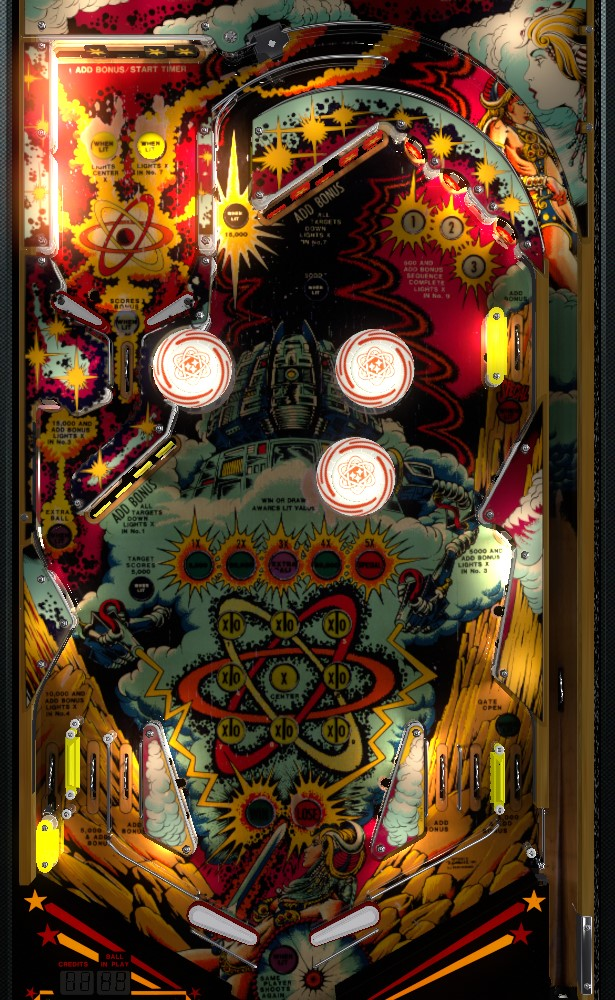

Fill in squares on the tic-tac-toe board by completing various banks of targets or activating certain rollover lanes. For each move you make, the computer makes one as well. Making a tic-tac-toe scores big points, possible specials and extra balls, and increases the bonus multiplier. Do not win another tic-tac-toe game when the bonus multiplier is 5x and Special is lit, because this will reset your multiplier back to 2x; with 5x bonus, shoot the center lane repeatedly to earn 15,000 points and a replunge.
When the ball is in the shooter lane, a full plunge goes to the mini-playfield in the top left with 5 drop targets. It's possible to short plunge and the ball will come down the center top lane toward the main playfield, but the main two flippers are locked, so there's no reason to do so- just plunge to the mini playfield area.
Once in the mini playfield, try to stay there as long as possible. As soon as you hit a drop target, a 10 second timer begins, at which point the mini-playfield flippers lock and the ball is allowed to drain toward the main playfield. Drop targets in the mini-playfield do not score points, but they do advance bonus; the rollover switch that serves as the only exit out of the mini-playfield collects the current bonus, so a trip to the mini-playfield is guaranteed at least 1,000 points per drop target scored times the bonus multiplier. Hitting 7 drop targets in the mini-playfield lights either box #5 or box #7 in the tic-tac-toe game with an X, and hitting 10 drop targets in the mini-playfield scores an instant tic-tac-toe win; more details on what that means in the next section.
Completing or activating various features around the game will fill in an X in one of the 9 boxes of the tic-tac-toe game in the center of the playfield; when you fill in a box, the computer will pick a different box to fill in with an O. The computer cannot pick the center box, and seems to pick boxes in such a way as to make a tie game impossible, meaning its play is far from optimal; however, a tie is possible, and counts the same as a win for the player. Winning a tic-tac-toe game scores 50,000 points plus the currently lit award and advances the progression one level, which includes an increase to the bonus multiplier. Losing a tic-tac-toe game decreases the bonus multiplier and lit award, but lights the extra ball at the lower left standup target and lights the special at the upper right side lane.
The following features light these boxes with an X for the player, assuming the computer has not filled them with an O yet:
Making 10 drop targets in a single trip to the mini-playfield awards an instant win of a tic-tac-toe, no matter the current board state.
To start each ball, both sets of main playfield drop targets are reset, and they begin unlit. Each target down scores 500 points and a bonus advance. Completing either bank of drops will reset and light that bank, as well as opening the gate in the right out lane. Each drop target down in a lit bank scores 5,000 points and a bonus advance, and knocking down 2 targets at the same time scores 20,000 points.
(These rules are in addition to the ways that drop target banks can light tic-tac-toe boxes as described above.)
Although it doesn't look like it given the placement of the pop bumpers, all 5 upper drops on the main playfield can be hit from the left flipper.
The center lane that goes up from directly between the two banks of main playfield drop targets leads back to the shooter lane for a replunge. This scores 15,000 points. The insert says that the score is only available when lit, but the only time this lane is not lit is when the ball is already in the shooter lane, to prevent a scoring exploit with a short plunge and force the player to full plunge into the mini-playfield from the shooter lane.
Completing either bank of drop targets opens a one time use gate in the right out lane. This gate is closed at the start of the ball, and closes once used. You don't get the 15,000 points for reaccessing the shooter lane in this way; only the 5,000 points and bonus advance that usually come from the right out lane.
There are three lanes on each side of the table, thanks to the widebody dimensions that are used. On the left, the leftmost lane is a permanent kickback lane which scores 10,000 points and a bonus advance, and lights box #4 (middle left) of the tic-tac-toe game. The next lane inward is an out lane, scoring 5,000 points and a bonus advance. The innermost lane is an in lane, scoring 500 points and a bonus advance, lighting either box 2 or 6 or 8, and feeding the left flipper. On the right, the two innermost lanes are in lanes that function identically to the left in lane, and the outermost lane is an out lane with a gate in it that works as described above.
Bonus is advanced by any drop target, standup target, or rollover lane, with the sole exception being the rollover lane that acts as the exit to the mini-playfield, because that particular rollover is a mid-ball bonus collect instead. Somewhat unusually, the end of ball bonus is not shown on the playfield, but rather in a small display on the middle-right of the backglass. The bonus amount at any given time is 1,000 points, times the number of advances shown on the backglass, times the current bonus multiplier. Multiplier is increased or decreased by winning or losing tic-tac-toe games and maxes out at 5x. If there is a limit on the number of base bonus advances shown on the backglass, it is at least 21. Bonus multiplier carries over from ball to ball, but base bonus never does.
In competition/novelty play, extra balls and specials both score 50,000 points.
For a 3-ball game, the tic-tac-toe progression starts at level 2, and pop bumpers score 1,000 points. For a 5-ball game, tic-tac-toe progression starts at level 1, and pop bumpers score 100 points.